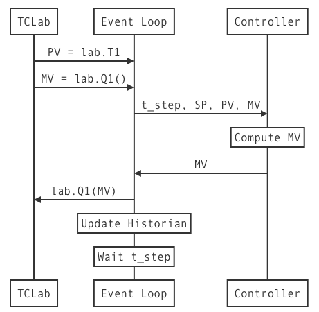

Controller Tuning
Contents
3.8. Controller Tuning¶
3.8.1. Learning Goals¶
Up to this point we have been discussing the theory and implementation of Proportional and Proportional-Integral control. The controllers have been specified with several parameters \(K_p\), \(K_I\), and the sampling time step. The purpose of this notebook is to describe methods for the practical determination of these parameters.
3.8.2. Glossary¶
- Process Variable (PV)
A process measurement. Guiding this variable to a desired target may be direct target of the control system, or it may be a proxy for a variable that cannot be directly measured. Example: Speed of a car. Example: Measured temperature of the TCLab device.
- Manipulated Variable (MV):
A process variable that is manipulated in order to acheive the control objective. Example: Throttle setting on a car.
- Disturbance Variable (DV):
Any process variable that may change and cause the process variable (PV) to change in undesired manner.
- Setpoint (SP):
A signal indicating the desired value for a measured process variable.
- Proportional Gain (\(K_P\))
The control parameter determining the magnitude of the proportional control term in P, PI, and PID control
- Integral Gain (\(K_I\))
The control parameter determining the magnitude of the integral control term.

3.8.4. Versions of P, PI, and PID Control¶
3.8.4.2. Idealized (Textbook) PID control¶
Textbook equations, Position Form
Expressed with error signal
Discrete-time Version for TCLab
Proportional Control: Reduces system time constants. Too much leads to overshoot and excessive control action.
Integral Control: Eliminates steady-state offset. Tends to slow-down and destablize control.
Derivative Control: Mitigates fast changes in PV. Not as important as P and PI for most process control applications.
3.8.4.3. Practical PI Control¶
Problems with textbook control:
Position Form: How to choose \(\bar{MV}\)?
Reset (also called Integral) windup due to limits on manipulated variable.
Abrupt changes (“Bumps”) on transition from manual to automatic control.
Three changes to the textbook control rule:
Velocity form. Compute updates to \(MV\)
Anti-reset windup. Limit MV to feasible limits. Use measured MV if available.
Bumpless transfer. Leave SP out of the proportional control term.
Given:
parameter values \(\delta t\), \(K_P\), \(K_I\), \(MV_{min}\), \(MV_{out}\)
prior values \(PV_{k-1}\)
current values for \(PV_k\), \(SP_k\), \(MV_k\) (if available):
3.8.5. PI Control for Temperature Control Lab¶

# caution: this is not a final version of our PI controller
def PI(Kp, Ki, MV_bar=0):
MV = MV_bar
e_prev = 0
while True:
t_step, SP, PV = yield MV
e = PV - SP
MV = MV - Kp*(e - e_prev) - t_step*Ki*e
e_prev = e
The benefits of using the yield statement is that we can use the same code to create multiple instances of controller, each with it’s own parameters and state. The communication between the main event loop and a controller instance is illustrated in this diagram:

The following cells demonstrate performance of the controller when subject to a step change in setpoint and a disturbance input.
from tclab import TCLab, clock, Historian, Plotter, setup
def experiment_3(controller, t_final=1000, t_step=5,
SP=lambda t: 40 if t >= 20 else 0,
DV=lambda t: 100 if t >= 420 else 0,
MV=lambda t: 25 if t <= 100 else None): # <== manipulated variable. Return none for auto
TCLab = setup(connected=False, speedup=60)
with TCLab() as lab:
# set up historian and plotter
sources = (("T1", lambda: lab.T1), ("SP", lambda: SP(t)),
("U1", lambda: U1), ("Q1", lab.Q1))
h = Historian(sources)
p = Plotter(h, t_final, layout=[("T1", "SP"), ("Q1", "U1")])
# initialize manipulated variable
lab.P1 = 200
lab.Q1(next(controller))
# event loop
for t in clock(t_final, t_step):
T1 = lab.T1
U1 = lab.Q1()
if MV(t) is None:
U1 = controller.send((t_step, SP(t), T1, U1)) # automatic control
else:
U1 = MV(t) # manual control
lab.Q1(U1)
lab.Q2(DV(t))
p.update(t)
# add anti-integral windup feature.
def PI_bumpless(Kp, Ki, MV_bar=0, MV_min=0, MV_max=100):
MV = MV_bar
PV_prev = None
while True:
t_step, SP, PV, MV = yield MV
e = PV - SP
if PV_prev is not None:
MV += -Kp*(PV - PV_prev) - t_step*Ki*e
MV = max(MV_min, min(MV_max, MV))
PV_prev = PV
experiment_3(PI_bumpless(10, 0.5))

TCLab Model disconnected successfully.

3.8.6. Empirical Tuning Rules¶
There are a number of tuning rules in the literature that provide recommended values for the proportional gain \(K_P\). These rules require process information obtained from testing.
3.8.6.1. Rules based on Step Reponse¶

For a first-order plus time-delay (FOPTD), the available process information includes gain \(K\), process time constant \(T\), and process time delay \(\tau\).
Tuning rules are developed based on acheiving some performance criteria. Typical criteria include measures liks
Among the best known and commonly used tuning rules are listed in the following table (also see Astrom and Murray, Chapter 11):
Type |
\(K_P\) |
\(K_I\) |
|---|---|---|
P (Ziegler-Nichols) |
\(\frac{T}{K\tau}\) |
|
PI (Astrom and Murray) |
\(\frac{0.15\tau + 0.35T}{K\tau}\) |
\(\frac{0.46\tau + 0.02T}{K\tau^2}\) |
PI (Aggressvie IMC) |
\(\frac{T}{K(\tau + \max(0.1T, 0.8\tau)}\) |
\(\frac{1}{K(\tau + \max(0.1T, 0.8\tau)}\) |
PI (ITAE Tuning) |
\(\frac{0.586}{K}\left(\frac{\tau}{T}\right)^{-0.916}\) |
\(\frac{1.03 - 0 .165\left(\frac{\tau}{T}\right)}{T}K_P\) |
PI (Morari and Zafiriou) |
\(\frac{T + 0.5\tau}{1.7 K \tau}\) |
\(\frac{1}{1.7K}\) |
PI (Ziegler-Nichols) |
\(\frac{0.9 T}{K\tau}\) |
\(\frac{0.3T}{K\tau^2}\) |